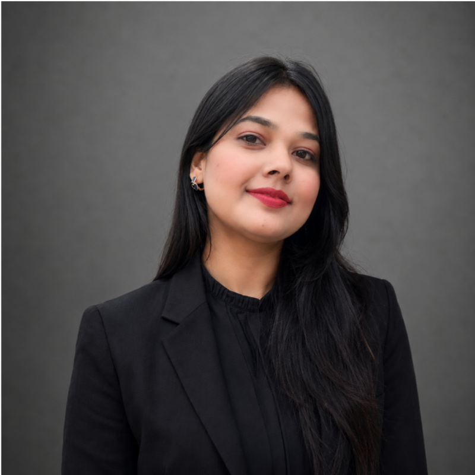
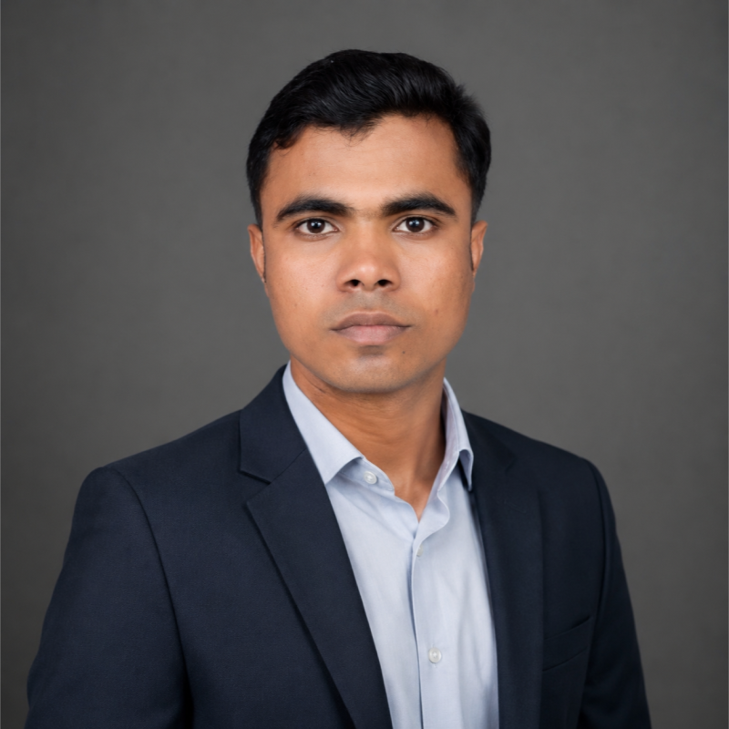
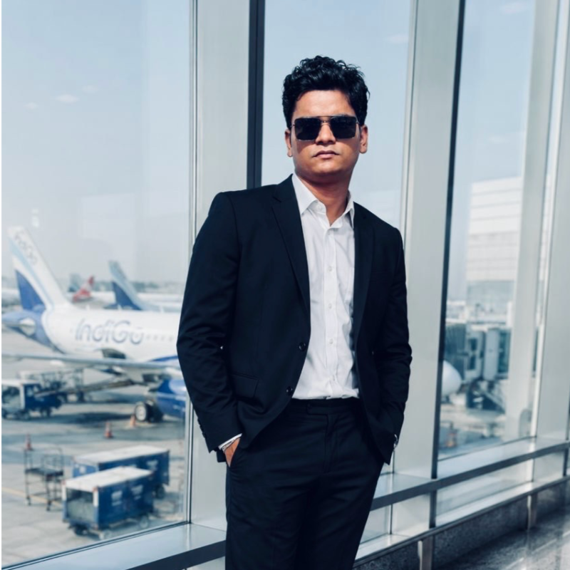

CO-FOUNDER
Sonali Chaudhari
Social Media & Content Manager
My focus at Varnika Studios is social media & content. I look forward to sharing more about my approach, interests and the work I enjoy here.
Connect on LinkedInTHE PEOPLE BEHIND VARNIKA
Meet our co-founders: the people bringing social media, digital marketing and design together at Varnika Studios.

CO-FOUNDER
Social Media & Content Manager
My focus at Varnika Studios is social media & content. I look forward to sharing more about my approach, interests and the work I enjoy here.
Connect on LinkedIn
CO-FOUNDER
Digital Marketing Manager
My focus at Varnika Studios is digital marketing. I look forward to sharing more about my approach, interests and the work I enjoy here.
Connect on LinkedIn
CO-FOUNDER
Graphics & Design Manager
My focus at Varnika Studios is graphics & design. I look forward to sharing more about my approach, interests and the work I enjoy here.
Connect on LinkedInTell us a little about your work, your questions and where you would like to go. We can work out a starting point together.
Let’s talk ↗